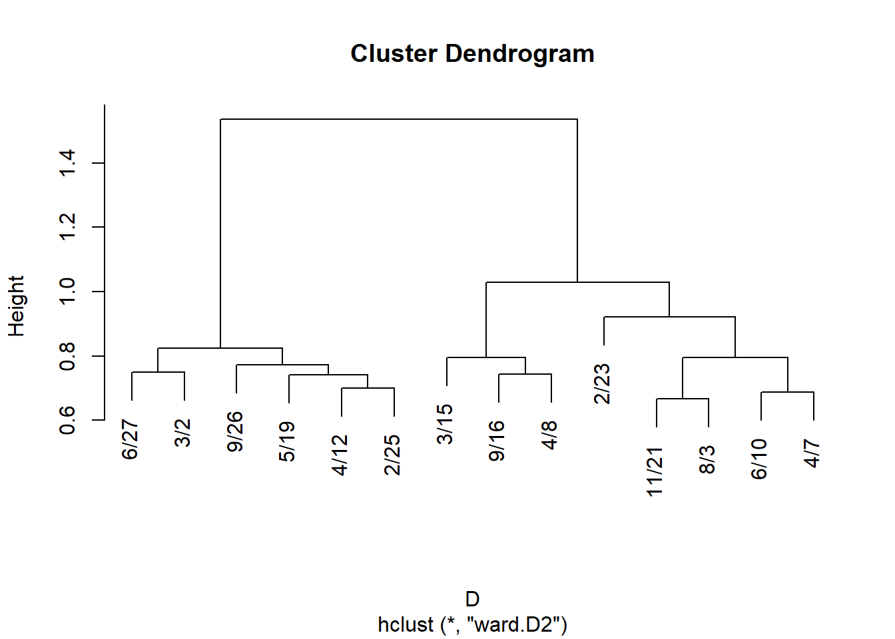
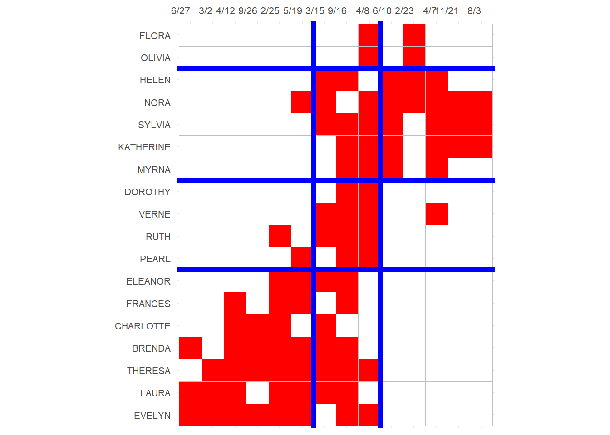
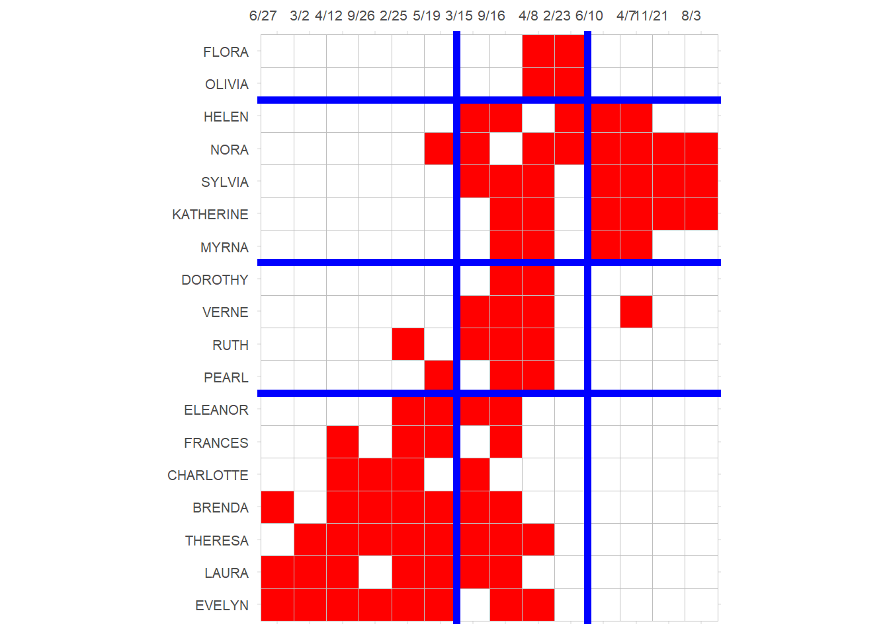

Similarity and Equivalence in Two-Mode Networks
1 Normalized Vertex Similarity Metrics
Note that the one-mode projections can be considered unnormalized similarity matrices just like in the case of regular networks. That means that if we have the degrees of nodes in each mode, we can transform this matrix into any of the normalized vertex similarity metrics we discussed before, including Jaccard, Cosine, Dice, LHN, and so on.
Let’s see how this would work in our trusty Southern Women dataset:
Repackaging our vertex similarity function for the two-mode case, we have:
Code
vertex.sim <- function(x) {
A <- as.matrix(as_biadjacency_matrix(x))
M <- nrow(A) # number of persons
N <- ncol(A) # number of groups
p.d <- rowSums(A) # person degrees
g.d <- colSums(A) # group degrees
P <- A %*% t(A) # person projection
G <- t(A) %*% A # group projection
J.p <- diag(1, M, M)
J.g <- diag(1, N, N)
C.p <- diag(1, M, M)
C.g <- diag(1, N, N)
D.p <- diag(1, M, M)
D.g <- diag(1, N, N)
L.p <- diag(1, M, M)
L.g <- diag(1, N, N)
for (i in 1:M) {
for (j in 1:M) {
if (i < j) {
J.p[i, j] <- P[i, j] / (P[i, j] + p.d[i] + p.d[j])
J.p[j, i] <- P[i, j] / (P[i, j] + p.d[i] + p.d[j])
C.p[i, j] <- P[i, j] / (sqrt(p.d[i] * p.d[j]))
C.p[j, i] <- P[i, j] / (sqrt(p.d[i] * p.d[j]))
D.p[i, j] <- (2 * P[i, j]) / (2 * P[i, j] + p.d[i] + p.d[j])
D.p[j, i] <- (2 * P[i, j]) / (2 * P[i, j] + p.d[i] + p.d[j])
L.p[i, j] <- P[i, j] / (p.d[i] * p.d[j])
L.p[j, i] <- P[i, j] / (p.d[i] * p.d[j])
}
}
}
for (i in 1:N) {
for (j in 1:N) {
if (i < j) {
J.g[i, j] <- G[i, j] / (G[i, j] + g.d[i] + g.d[j])
J.g[j, i] <- G[i, j] / (G[i, j] + g.d[i] + g.d[j])
C.g[i, j] <- G[i, j] / (sqrt(g.d[i] * g.d[j]))
C.g[j, i] <- G[i, j] / (sqrt(g.d[i] * g.d[j]))
D.g[i, j] <- (2 * G[i, j]) / (2 * G[i, j] + g.d[i] + g.d[j])
D.g[j, i] <- (2 * G[i, j]) / (2 * G[i, j] + g.d[i] + g.d[j])
L.g[i, j] <- G[i, j] / (g.d[i] * g.d[j])
L.g[j, i] <- G[i, j] / (g.d[i] * g.d[j])
}
}
}
return(list(
J.p = J.p, C.p = C.p, D.p = D.p, L.p = L.p,
J.g = J.g, C.g = C.g, D.g = D.g, L.g = L.g
))
}Using this function to compute the Jaccard similarity between people yields:
Code
EVELYN LAURA THERESA BRENDA CHARLOTTE FRANCES ELEANOR PEARL RUTH
EVELYN 1.00 0.29 0.30 0.29 0.20 0.25 0.20 0.21 0.20
LAURA 0.29 1.00 0.29 0.30 0.21 0.27 0.27 0.17 0.21
THERESA 0.30 0.29 1.00 0.29 0.25 0.25 0.25 0.21 0.25
BRENDA 0.29 0.30 0.29 1.00 0.27 0.27 0.27 0.17 0.21
CHARLOTTE 0.20 0.21 0.25 0.27 1.00 0.20 0.20 0.00 0.20
FRANCES 0.25 0.27 0.25 0.27 0.20 1.00 0.27 0.22 0.20
ELEANOR 0.20 0.27 0.25 0.27 0.20 0.27 1.00 0.22 0.27
PEARL 0.21 0.17 0.21 0.17 0.00 0.22 0.22 1.00 0.22
RUTH 0.20 0.21 0.25 0.21 0.20 0.20 0.27 0.22 1.00
VERNE 0.14 0.15 0.20 0.15 0.11 0.11 0.20 0.22 0.27
MYRNA 0.14 0.08 0.14 0.08 0.00 0.11 0.11 0.22 0.20
KATHERINE 0.12 0.07 0.12 0.07 0.00 0.09 0.09 0.18 0.17
SYLVIA 0.12 0.12 0.17 0.12 0.08 0.08 0.15 0.17 0.21
NORA 0.11 0.12 0.16 0.12 0.08 0.08 0.14 0.15 0.14
HELEN 0.07 0.14 0.13 0.14 0.10 0.10 0.18 0.11 0.18
DOROTHY 0.17 0.10 0.17 0.10 0.00 0.14 0.14 0.29 0.25
OLIVIA 0.09 0.00 0.09 0.00 0.00 0.00 0.00 0.17 0.14
FLORA 0.09 0.00 0.09 0.00 0.00 0.00 0.00 0.17 0.14
VERNE MYRNA KATHERINE SYLVIA NORA HELEN DOROTHY OLIVIA FLORA
EVELYN 0.14 0.14 0.12 0.12 0.11 0.07 0.17 0.09 0.09
LAURA 0.15 0.08 0.07 0.12 0.12 0.14 0.10 0.00 0.00
THERESA 0.20 0.14 0.12 0.17 0.16 0.13 0.17 0.09 0.09
BRENDA 0.15 0.08 0.07 0.12 0.12 0.14 0.10 0.00 0.00
CHARLOTTE 0.11 0.00 0.00 0.08 0.08 0.10 0.00 0.00 0.00
FRANCES 0.11 0.11 0.09 0.08 0.08 0.10 0.14 0.00 0.00
ELEANOR 0.20 0.11 0.09 0.15 0.14 0.18 0.14 0.00 0.00
PEARL 0.22 0.22 0.18 0.17 0.15 0.11 0.29 0.17 0.17
RUTH 0.27 0.20 0.17 0.21 0.14 0.18 0.25 0.14 0.14
VERNE 1.00 0.27 0.23 0.27 0.20 0.25 0.25 0.14 0.14
MYRNA 0.27 1.00 0.29 0.27 0.20 0.25 0.25 0.14 0.14
KATHERINE 0.23 0.29 1.00 0.32 0.26 0.21 0.20 0.11 0.11
SYLVIA 0.27 0.27 0.32 1.00 0.29 0.25 0.18 0.10 0.10
NORA 0.20 0.20 0.26 0.29 1.00 0.24 0.09 0.17 0.17
HELEN 0.25 0.25 0.21 0.25 0.24 1.00 0.12 0.12 0.12
DOROTHY 0.25 0.25 0.20 0.18 0.09 0.12 1.00 0.20 0.20
OLIVIA 0.14 0.14 0.11 0.10 0.17 0.12 0.20 1.00 0.33
FLORA 0.14 0.14 0.11 0.10 0.17 0.12 0.20 0.33 1.002 Structural Equivalence
And, of course, once we have a similarity we can cluster nodes based on approximate structural equivalence by transforming proximities to distances:
And for events:
Code

We can then derive cluster memberships for people and groups from the hclust object:
Code
EVELYN LAURA THERESA BRENDA CHARLOTTE FRANCES ELEANOR PEARL
1 1 1 1 1 1 1 2
RUTH VERNE DOROTHY MYRNA KATHERINE SYLVIA NORA HELEN
2 2 2 3 3 3 3 3
OLIVIA FLORA
4 4 6/27 3/2 4/12 9/26 2/25 5/19 3/15 9/16 4/8 6/10 2/23 4/7 11/21
1 1 1 1 1 1 2 2 2 3 3 3 3
8/3
3 And finally we can block the original affiliation matrix, as recommended by Everett and Borgatti (2013, 210, table 5):
Code
library(ggcorrplot)
p <- ggcorrplot(t(A[names(clus.p), names(clus.g)]),
colors = c("white", "white", "red")
)
p <- p + theme(
legend.position = "none",
axis.text.y = element_text(size = 8),
axis.text.x = element_text(size = 8, angle = 0),
)
p <- p + scale_x_discrete(position = "top")
p <- p + geom_hline(yintercept = 7.5, linewidth = 2, color = "blue")
p <- p + geom_hline(yintercept = 11.5, linewidth = 2, color = "blue")
p <- p + geom_hline(yintercept = 16.5, linewidth = 2, color = "blue")
p <- p + geom_vline(xintercept = 6.5, linewidth = 2, color = "blue")
p <- p + geom_vline(xintercept = 9.5, linewidth = 2, color = "blue")
p
Which reveals a number of almost complete (one-blocks) and almost null (zero-blocks) in the social structure, with a reduced image matrix that looks like:
Code
library(kableExtra)
IM <- matrix(0, 4, 3)
IM[1, ] <- c(0, 1, 0)
IM[2, ] <- c(0, 1, 1)
IM[3, ] <- c(0, 1, 0)
IM[4, ] <- c(1, 1, 0)
rownames(IM) <- c("P.Block1", "P.Block2", "P.Block3", "P.Block4")
colnames(IM) <- c("E.Block1", "E.Block2", "E.Block3")
kbl(IM, format = "html", , align = "c") %>%
column_spec(1, bold = TRUE) %>%
kable_styling(
full_width = TRUE,
bootstrap_options = c("hover", "condensed", "responsive")
)| E.Block1 | E.Block2 | E.Block3 | |
|---|---|---|---|
| P.Block1 | 0 | 1 | 0 |
| P.Block2 | 0 | 1 | 1 |
| P.Block3 | 0 | 1 | 0 |
| P.Block4 | 1 | 1 | 0 |
3 Generalized Vertex Similarity
Recall that vertex similarity works using the principle of structural equivalence: Two people are similar if the choose the same objects (groups), and two objects (groups) are similar if they are chosen by the same people.
We can, like we did in the one mode case, be after a more general version of similarity, which says that: Two people are similar if they choose similar (not necessarily the same) objects, and two objects are similar if they are chosen by similar (not necessarily the same) people.
This leads to the same problem setup that inspired the SimRank approach (Jeh and Widom 2002).
A (longish) function to compute the SimRank similarity between nodes in a two mode network goes as follows:
Code
TM.SimRank <- function(A, C = 0.8, iter = 10) {
nr <- nrow(A)
nc <- ncol(A)
dr <- rowSums(A)
dc <- colSums(A)
Sr <- diag(1, nr, nr) # baseline similarity: every node maximally similar to themselves
Sc <- diag(1, nc, nc) # baseline similarity: every node maximally similar to themselves
rn <- rownames(A)
cn <- colnames(A)
rownames(Sr) <- rn
colnames(Sr) <- rn
rownames(Sc) <- cn
colnames(Sc) <- cn
m <- 1
while (m < iter) {
Sr.pre <- Sr
Sc.pre <- Sc
for (i in 1:nr) {
for (j in 1:nr) {
if (i != j) {
a <- names(which(A[i, ] == 1)) # objects chosen by i
b <- names(which(A[j, ] == 1)) # objects chosen by j
Scij <- 0
for (k in a) {
for (l in b) {
Scij <- Scij + Sc[k, l] # i's similarity to j
}
}
Sr[i, j] <- C / (dr[i] * dr[j]) * Scij
}
}
}
for (i in 1:nc) {
for (j in 1:nc) {
if (i != j) {
a <- names(which(A[, i] == 1)) # people who chose object i
b <- names(which(A[, j] == 1)) # people who chose object j
Srij <- 0
for (k in a) {
for (l in b) {
Srij <- Srij + Sr[k, l] # i's similarity to j
}
}
Sc[i, j] <- C / (dc[i] * dc[j]) * Srij
}
}
}
m <- m + 1
}
return(list(Sr = Sr, Sc = Sc))
}This function takes the biadjacency matrix \(\mathbf{A}\) as input and returns two generalized relational similarity matrices: One for the people (row objects) and the other one for the groups (column objects).
Here’s how that would work in the SW data. First we compute the SimRank scores:
Then we peek inside the people similarity matrix:
EVELYN LAURA THERESA BRENDA CHARLOTTE FRANCES ELEANOR PEARL RUTH
EVELYN 1.000 0.267 0.262 0.266 0.259 0.275 0.248 0.255 0.237
LAURA 0.267 1.000 0.262 0.277 0.270 0.287 0.280 0.237 0.247
THERESA 0.262 0.262 1.000 0.262 0.273 0.270 0.264 0.254 0.256
BRENDA 0.266 0.277 0.262 1.000 0.290 0.287 0.279 0.235 0.246
CHARLOTTE 0.259 0.270 0.273 0.290 1.000 0.276 0.269 0.175 0.256
FRANCES 0.275 0.287 0.270 0.287 0.276 1.000 0.305 0.280 0.256
ELEANOR 0.248 0.280 0.264 0.279 0.269 0.305 1.000 0.279 0.294
PEARL 0.255 0.237 0.254 0.235 0.175 0.280 0.279 1.000 0.279
RUTH 0.237 0.247 0.256 0.246 0.256 0.256 0.294 0.279 1.000
VERNE 0.201 0.207 0.222 0.206 0.198 0.202 0.246 0.276 0.288
VERNE
EVELYN 0.201
LAURA 0.207
THERESA 0.222
BRENDA 0.206
CHARLOTTE 0.198
FRANCES 0.202
ELEANOR 0.246
PEARL 0.276
RUTH 0.288
VERNE 1.000And the group similarity matrix:
6/27 3/2 4/12 9/26 2/25 5/19 3/15 9/16 4/8 6/10
6/27 1.000 0.343 0.314 0.312 0.287 0.277 0.224 0.226 0.178 0.137
3/2 0.343 1.000 0.312 0.311 0.285 0.276 0.224 0.228 0.200 0.141
4/12 0.314 0.312 1.000 0.314 0.288 0.265 0.226 0.220 0.179 0.138
9/26 0.312 0.311 0.314 1.000 0.287 0.256 0.230 0.214 0.186 0.137
2/25 0.287 0.285 0.288 0.287 1.000 0.260 0.235 0.226 0.187 0.146
5/19 0.277 0.276 0.265 0.256 0.260 1.000 0.224 0.226 0.200 0.171
3/15 0.224 0.224 0.226 0.230 0.235 0.224 1.000 0.221 0.204 0.209
9/16 0.226 0.228 0.220 0.214 0.226 0.226 0.221 1.000 0.221 0.214
4/8 0.178 0.200 0.179 0.186 0.187 0.200 0.204 0.221 1.000 0.234
6/10 0.137 0.141 0.138 0.137 0.146 0.171 0.209 0.214 0.234 1.000Like before we can use these results to define two sets of distances:
Subject to hierarchical clustering:
And plot:
Get cluster memberships for people and groups from the hclust object:
EVELYN LAURA THERESA BRENDA CHARLOTTE FRANCES ELEANOR PEARL
1 1 1 1 1 1 1 2
RUTH VERNE DOROTHY MYRNA KATHERINE SYLVIA NORA HELEN
2 2 2 3 3 3 3 3
OLIVIA FLORA
4 4 6/27 3/2 4/12 9/26 2/25 5/19 3/15 9/16 4/8 2/23 6/10 4/7 11/21
1 1 1 1 1 1 2 2 2 2 3 3 3
8/3
3 And block the biadjacency matrix:
Code
p <- ggcorrplot(t(A[names(clus.p), names(clus.g)]),
colors = c("white", "white", "red")
)
p <- p + theme(
legend.position = "none",
axis.text.y = element_text(size = 8),
axis.text.x = element_text(size = 8, angle = 0),
)
p <- p + scale_x_discrete(position = "top")
p <- p + geom_hline(yintercept = 7.5, linewidth = 2, color = "blue")
p <- p + geom_hline(yintercept = 11.5, linewidth = 2, color = "blue")
p <- p + geom_hline(yintercept = 16.5, linewidth = 2, color = "blue")
p <- p + geom_vline(xintercept = 6.5, linewidth = 2, color = "blue")
p <- p + geom_vline(xintercept = 10.5, linewidth = 2, color = "blue")
p
Note that this block solution is similar (pun intended) but not exactly the same as the one based on structural equivalence we obtained earlier, although it would lead to the same reduced image matrix for the blocks.